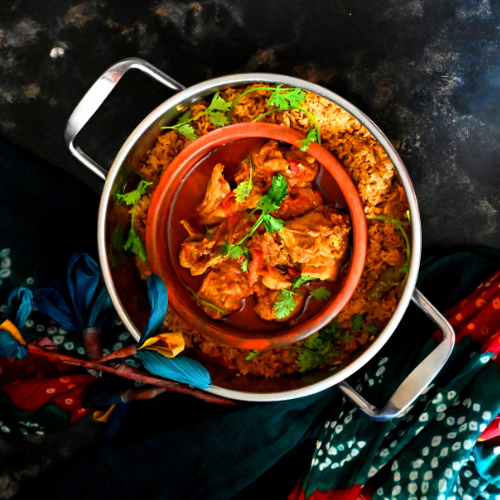

Chicken Curry & Rice
Chicken Curry & Rice -- a delightful dish that brings together tender
chicken pieces, a rich and flavorful sauce infused with aromatic spices,
and a perfect balance of heat and tanginess. Its vibrant flavors and
comforting texture make chicken curry a true culinary delight that always
leaves me wanting another serving.

Nutritional Facts (per serving)
| Calories |
Fats |
Carbs |
Protein |
427 |
24g |
15g |
38g |
Description:
Chicken Curry & Rice is a delectable dish that combines tender chicken
pieces with a flavorful curry sauce, served alongside fluffy rice. The
dish features a harmonious blend of aromatic spices that infuse the
chicken, creating a rich and satisfying flavor profile. The tender meat,
paired with the fragrant curry sauce and perfectly cooked rice, offers a
comforting and fulfilling meal that is sure to please your taste buds.
How to make:
Start by partially cooking your seasoned chicken breasts in a large pan,
removing them after they're browned. After setting the chicken breasts
aside, cook garlic, onions, and ginger in the same pan to create the
flavor base. Once the onions are translucent, add in spices, tomatoes,
yogurt, and chicken to cook thoroughly. Cover and simmer for about 20
minutes for a wow-worthy chicken curry. Finish with fresh herbs and a
squeeze of lemon.
Ingredients:
- 2 pounds skinless, boneless chicken breast halves
- 2 teaspoons salt
- ½ cup cooking oil
- 1 ½ cups chopped onion
- 1 tablespoon minced garlic
- 1 ½ teaspoons minced fresh ginger root
- 1 tablespoon curry powder
- 1 teaspoon ground cumin
- 1 teaspoon ground tumeric
- 1 teaspoon ground coriander
- 1 teaspoon cayenne pepper
- 1 tablespoon water
- 1 (15 ounce) can crushed tomatoes
- 1 cup plain yogurt
- 1 tablespoon chopped fresh cilantro
- 1 teaspoons salt
- ½ cup water
- 1 teaspoon garam masala
- 1 tablespoon chopped fresh cilantro
- 1 tablespoon fresh lemon juice
- 2 cups rice (optional)
Steps:
- Gather all ingredients.
- Sprinkle the chicken breasts with 2 teaspoons salt.
-
Heat oil in a large skillet over high heat; partially cook the chicken
in the hot oil in batches until completely browned on all sides.
- Transfer browned chicken breasts to a plate and set aside.
-
Reduce the heat to medium and add onion, garlic, and ginger to the oil
remaining in the skillet.
-
Cook and stir until onion turns soft and translucent, 5 to 8 minutes.
-
Stir curry powder, cumin, turmeric, coriander, cayenne, and 1 tablespoon
of water into the onion mixture; allow to heat together for about 1
minute while stirring.
-
Add tomatoes, yogurt, 1 tablespoon chopped cilantro, and 1 teaspoon salt
to the mixture; stir to combine.
-
Return chicken breast to the skillet along with any juices on the plate.
-
Pour in 1/2 cup water and bring to a boil, turning the chicken to coat
with the sauce.
- Sprinkle garam masala and 1 tablespoon cilantro over the chicken.
-
Cover the skillet and simmer until chicken breasts are no longer pink in
the center and the juices run clear, about 20 minutes.
-
An instant-read thermometer inserted into the center should read at
least 165 degrees F (74 degrees C). Drizzle with lemon juice to serve.
-
Cook the rice to your preference and serve with the curry. This is
optional as you can substitute it with roti or naan bread.
Cook's Notes:
Allowing the curry to cook with the spices for a few minutes allows all
the flavors to infuse into the chicken.
Leftover chicken curry can be refrigerated in a sealed container and
enjoyed for two to four days. Freezing extends the time to two months —
simply thaw and gently reheat in the microwave or on the stovetop.
Cook's Prepping Information
| Prep Time: |
Cook Time: |
Total Time: |
Servings: |
Yield: |
20 mins |
40 mins |
1 hrs |
6 |
6 servings |
Back to top
Return to Main Page, or go to the next
recipe.